广告实操手册 · Codex 版
从一份广告报表，到一张有人点头、有日期、能复盘的动作清单。全程不花钱，不用任何付费接口，不连广告后台。
| 谁干 | 干什么 |
|---|---|
| 脚本 | 算账、对目标找异常、按规则出动作、验证器、写状态库、出报告 |
| AI（Codex） | 读搜索词做语义分组；事实、推断、未知分开写；摆选项和代价；起草行动卡 |
| 你 | 填目标和约束、定分组规则、做取舍、逐条确认或驳回、去后台执行、到日子复盘 |
先认识页面（1 分钟）
页面从上到下：一条「本周结论」，然后是 Agent 本周运行的六个格子、持续运行时间线，再是课上那张图的六层：① 发现异常 → ②③④ 一张诊断树 → ⑤ 分类审批 → ⑥ 执行·下周看结果。左侧导航能直接跳；右上角从左到右：当前身份（老板／广告运营／供应链，权限不同）、重置、跑一圈。
| 区块 | 里面是什么 | 谁在动 |
|---|---|---|
| Agent 本周运行 | 读取状态 → 判断下一步 → 执行 → 验证 → 写入状态 → 判断停止条件；每跑一圈亮一遍 | Agent |
| 持续运行 | 每周一圈连成一条线：前三圈模拟回放、本周真实一圈、下一圈几时醒；点一圈看当时的动作和下周结果 | 看 |
| ① 发现异常 | 对照目标（三个人填的输入）、六张指标卡、逐项判定（每行引出哪些分析） | 你填目标 |
| ②③④ 诊断树 | 异常 → 分析 H1～H6 → 对策 A～E → 动作类型；点节点看上下游、结论和证据；对策打勾＝选进本轮 | AI 分析、脚本算数、你取舍 |
| ⑤ 分类审批 | 动作按类型分组，带 Campaign／广告组／SKU／ASIN／关键词；通过／驳回（必填理由）／整类通过；v1→v2 对比条、「请复核」 | 你点头 |
| ⑥ 执行·下周看结果 | 四个执行通道（审批通过的按通道导出批量上传表）、执行清单、复盘日倒计时、行动卡九格、驳回记录、回测、运行历史、操作记录 | 人去后台；下一圈先读回 |
第一轮 · 用示例跑通（约 40 分钟，人人都做）
开工前检查约 2 分钟
电脑上要有三样：Codex、Python 3（3.9 以上）、一个浏览器。工作台只用 Python 标准库加 pandas，不装别的。
帮我检查这台电脑有没有 python3 和 pip，各是什么版本；再检查 python3 能不能 import pandas。缺哪个告诉我怎么装，先别动手装。
应该看到python3 报出版本号（3.9 以上都行），pandas 能导入。
卡住了
缺 pandas：让它执行 pip install pandas（报权限错就加 --user）。Windows 学员：把后面所有 python3 都当成 python，其余一样。
把工作台拿下来、跑起来约 5 分钟
不要放在「桌面」或「文稿」下面，Mac 会拦着后台进程不让读那里的文件。
做三件事： 1. 把 https://github.com/WaytoAIC/ads-workbench 克隆到 ~/ads-lab 2. 确认 ~/ads-lab 里有 工作台/app.py、_脚本/、_原始拉取/、参数.json、分组规则.json 3. 在 ~/ads-lab 下启动 python3 工作台/app.py，告诉我浏览器该打开哪个地址 启动后这个进程要一直开着，别关；它只监听本机，不联网。
应该看到它报出 http://localhost:8810。浏览器打开：左边一条深色导航（总览、持续运行、①～⑥），顶栏写着「本周广告周检」，状态「待处理」，右上角是身份切换、「重置」和蓝色的「跑第一圈」；页面中间一张卡「任务 R-001 已建好」。Mac 学员也可以直接双击仓库里的「启动工作台.command」。
卡住了
报 Address already in use：让它加 --port 8811 再起，地址跟着换。报 Operation not permitted：仓库放在了桌面或文稿下，挪到 ~/ads-lab 再来。页面空白：等两秒刷新；还空白就看终端有没有红字，贴给 Codex。
跑第一圈，看六个格子约 3 分钟
数据是脱敏并替换过品类的演示数据（浴室防滑垫），Campaign、广告组、ASIN、SKU 都是按真实格式生成的脱敏值；不连任何广告后台，「跑一圈」只读本机文件。
点右上角「跑第一圈」。
应该看到「Agent 本周运行」六个格子依次亮起：① 读取状态 → ② 判断下一步 → ③ 执行 → ④ 验证 → ⑤ 写入状态 → ⑥ 判断停止条件，一秒左右跑完。② 写「首次运行 → 跑 v1」；③ 写「读报表 → 分组账 → 异常 → 89 条动作 → 行动卡 → 报告」；④ 写「验证器 9/9 项通过」；⑥ 写「停在「待核对」，等人处理 89 条动作。下一次触发：复盘日，或输入改变」。顶栏状态变成「待核对」，左侧导航各步带上数字角标，最上面出现一条黄色「本周结论」。点任何一格能展开细节。它跑完就停，不会自己再动。
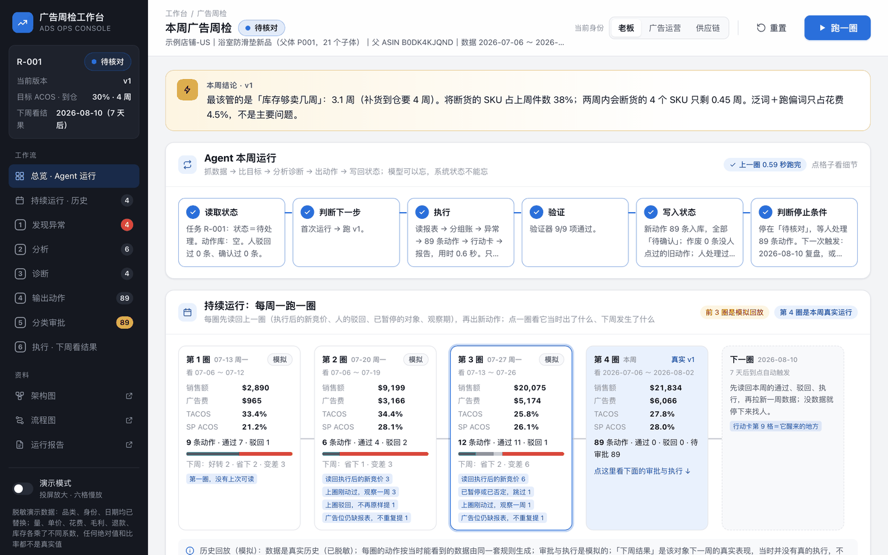
跑完第一圈的首屏：左侧导航、本周结论、六个格子、持续运行时间线。右上角从左到右：身份、重置、跑一圈。
把 ~/ads-lab/工作台/app.py 里 _loop 这个函数的六步，用大白话一步一句讲给我听。然后指出：哪一步是它自己不做、留给人做的；哪两种情况下它会在第 2 步就停下来。
应该看到它能说出第 6 步是停下等人；两种停：没有待处理的任务、缺输入。
卡住了
某一格变红：点开那一格看原因，把原话贴给 Codex 问怎么办。多半是终端里的进程被关了。
① 发现异常：目标、数据、判定约 4 分钟
这一块三段：对照目标（三个人填的数：目标 ACOS、补货到仓还要几周、产品阶段）、本周数据（六张指标卡，带四周小趋势）、逐项判定（判定／指标／现值／对着什么比／说明／引出的分析）。每一条异常都是拿现值对着这三个输入和盈亏线比出来的。
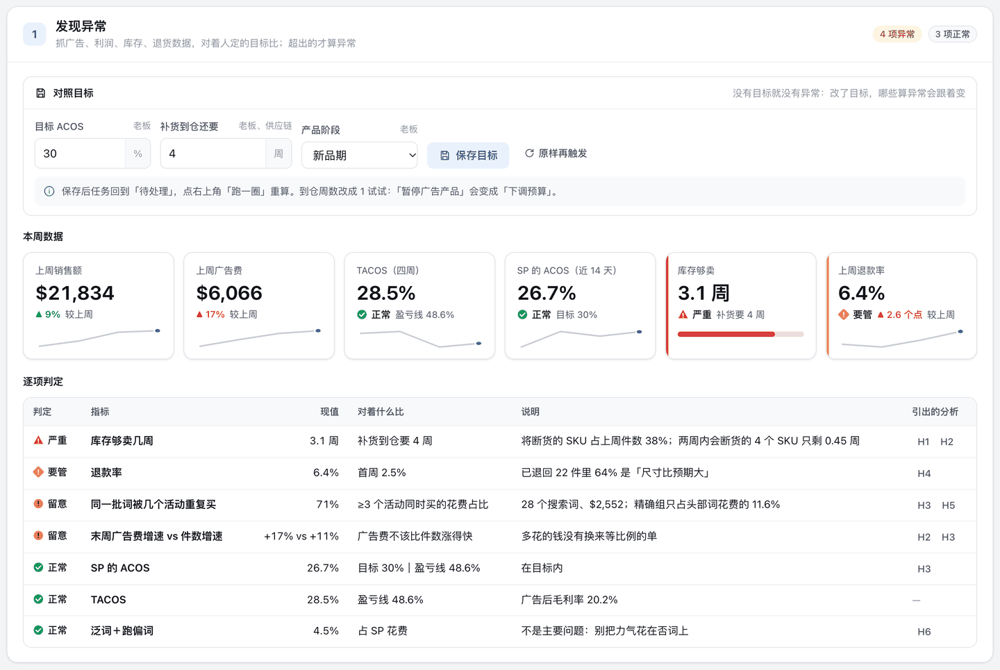
① 发现异常：上面是人填的目标，中间六张指标卡，下面是逐项判定；最右一列的 H1、H2 是它引出的分析。
应该看到「库存够卖几周」排第一，红色「严重」——3.1 周小于补货要的 4 周；「退款率」橙色「要管」；「同一批词被几个活动重复买」约七成，黄色「留意」；「SP 的 ACOS」「TACOS」「泛词＋跑偏词」都是绿色「正常」，泛词只占花费 4.5%。没有目标，就没有异常；你以为的问题（跑偏词）不是问题。
读 ~/ads-lab/广告闭环/输出/数字.json 里「异常」这一段，用大白话告诉我：每一条是拿哪个数、对着哪个目标比出来的？哪一条和「补货到仓周数」这个输入有关？如果目标 ACOS 从 30% 改成 20%，哪一行会变色？
应该看到它指出库存那一行用的是到仓周数；目标 ACOS 改成 20% 后「SP 的 ACOS」会从正常变成留意。
卡住了
它凭印象讲：让它「去文件里读，把数念给我听」。
②③④ 诊断树：从一个异常走到动作约 6 分钟
一张四列的树：异常（就是上一块的七行）→ 分析（H1～H6，一个异常可以拆成几个问题，一个问题也可以来自几个异常）→ 诊断（对策 A～E，综合多方数据下结论）→ 输出动作（按类型分好，带执行通道和待审批数）。点任何一个节点，它的上下游会高亮，别的变淡，下面的详情区左边是结论、右边是证据。
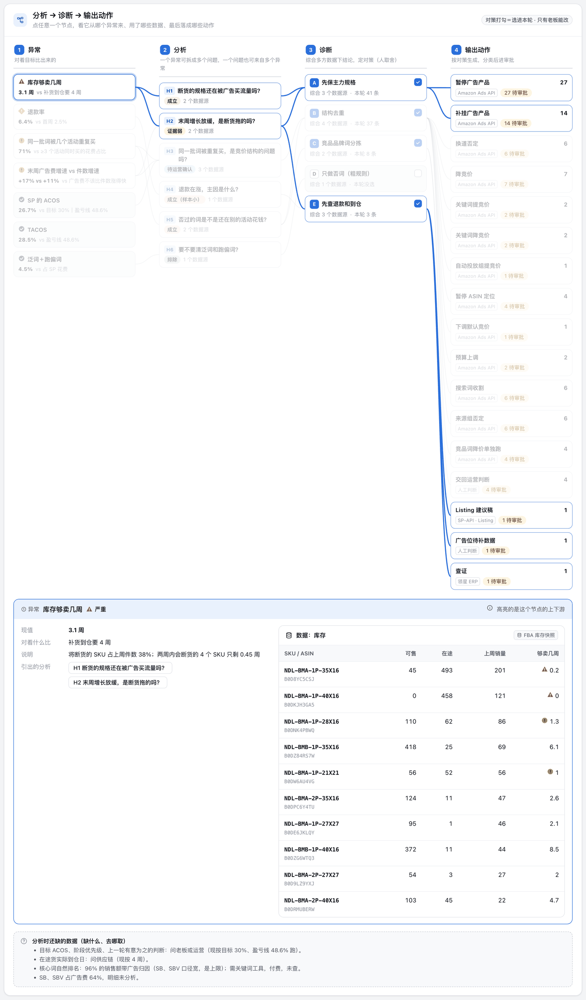
诊断树：默认选中最严重的异常「库存够卖几周」，高亮的是从它出发的整条线。
点分析列的 <b>H1「断货的规格还在被广告买流量吗？」</b>。看详情：结论、什么情况下不成立、来自哪个异常、指向哪个对策；右边是它依据的事实和数据来源，再往下是库存表。
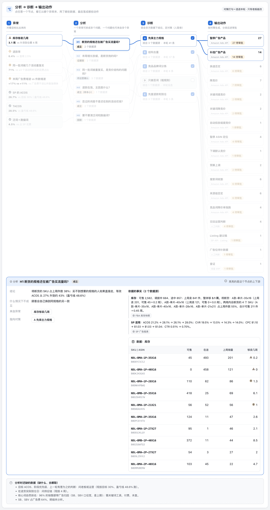
点 H1 后的详情：左边结论和「什么情况下不成立」，右边两条事实各标了数据源，下面是按 SKU 的库存表（带脱敏的 SKU 和 ASIN）。
应该看到H1 判定「成立」：将断货的 SKU 占上周件数 38%，等效 ACOS 会从 27% 升到约 43%；不成立的情况是「顾客会自己换到同规格的另一款」。库存表里销量最大的规格反而最先断货（够卖 0.2 周、0 周）。树最下面还有一块「分析时还缺的数据」：到仓日要问供应链，自然排名要付费工具。
诊断树里 H3「同一批词被重复买，是竞价结构的问题吗？」的依据是哪几条事实？它自己写的「不成立的情况」是什么？如果我是老板，要去问谁才能把它变成事实？
应该看到它能指回事实的编号，说出要去问运营（竞价是不是有意为之）。事实、推断、未知分开写，是这一块的规矩。
卡住了
树上连线没画出来：窗口太窄；拉宽浏览器或刷新。
③ 诊断：做一次取舍约 3 分钟
诊断列的五张卡＝五条对策：A 先保主力规格、B 结构去重、C 竞品品牌词分拣、D 只做否词（粗规则）、E 先查退款和到仓。卡右上角的勾＝选进本轮；点卡本身看它的做什么、代价、什么时候该选、可逆吗，以及它落成了哪些动作。
点 D 卡右上角的勾（只有老板能改）：树的标题栏出现「取舍改成 A · B · C · D · E」和「按这个取舍重新生成」。今天不要点重新生成，点「放弃」或再点一次勾取消。然后点 D 卡本身，读它的代价。
应该看到D 的代价：近 14 天最多省 $162（占花费 4.5%）；回测里粗规则标出的 4 个词，3 个后来出了单。本轮它没选，所以动作列里没有「粗规则否词」这一类。
读 ~/ads-lab/广告闭环/输出/选项.json，把五条路按「能省或能保多少钱／风险多大／可逆吗」列成一张表。然后回答：如果只能做一件，数据更支持哪一件？说完理由，但最后由我定。
应该看到一张五行表；它多半推荐 A（库存），并说明这是建议不是决定。取舍是人的。
⑤ 分类审批：当一回运营约 5 分钟
动作按类型分组，每组标了执行通道（Amazon Ads API／SP-API Listing／领星 ERP／人工判断）。每一行：编号／Campaign 和广告组（带 ID）／对象（SKU 和 ASIN，或关键词和匹配方式）／改什么（实体、操作、现值 → 新值）／依据／审批。状态只有六种：待审批 → 已确认 → 已执行 → 已验证，或驳回，或作废。工具栏可按状态、按对策筛选。
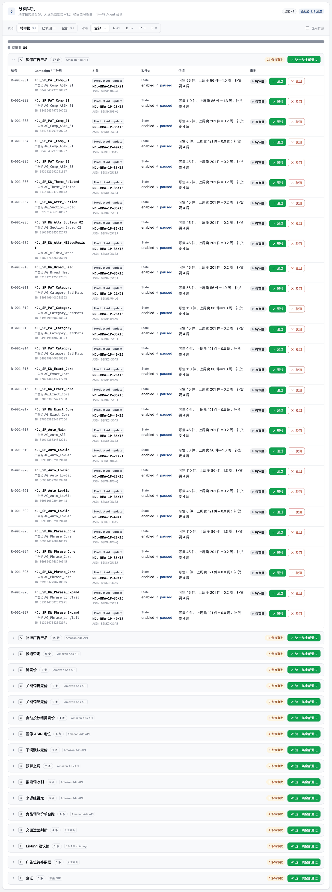
⑤ 分类审批：第一组「暂停广告产品」27 条，每条能通过或驳回；组头有「这一类全部通过」。
1. 展开「暂停广告产品」这一组（点组名）。 2. 第一行点「通过」：状态变成蓝色「已确认」，下面出现「老板 · 时间」，按钮变成「撤回」。 3. 第二行点「驳回」，什么都不填直接点「提交驳回」——被拦：「驳回必须填理由：下一轮 Agent 要读它」。填一句理由再提交，状态变橙色「驳回」，理由留在行里。 4. 组头点「这一类全部通过」：剩下的整组变蓝。 5. 把顶栏身份切成「供应链」：所有审批按钮带上小锁；再点任何一个「通过」——弹层：「「点动作」这一步，供应链没有权限。能做的人：广告运营、老板」。切回「老板」。
应该看到状态条上多出蓝色一段、橙色一段，图例的数字跟着变；左侧导航「分类审批」的角标减少。人只在这里点头或摇头；权限写在系统里，不靠自觉。
卡住了
想反悔：已确认的点「撤回」，驳回的点「撤回驳回」。
全课关键体验：改一个输入，再跑一圈约 8 分钟
假设供应链刚告诉你：货一周就到。
7a. 回到 ①「对照目标」，把「补货到仓还要几周」从 4 改成 1，点「保存目标」。顶栏状态变回「待处理」。 7b. 点右上角「跑一圈」。
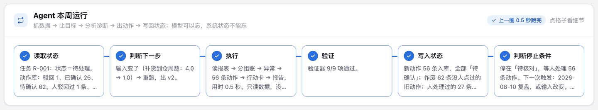
第二圈：第 1 格读回了你点过的（确认 26、驳回 1），第 2 格写明为什么重跑，第 5 格写明作废了多少、保留了多少、几条要复核。
应该看到① 读取状态：「人驳回过 1 条、确认过 26 条」；② 判断下一步：「输入变了（补货到仓周数：4.0 → 1.0）→ 重跑，出 v2」；⑤ 写入状态：「新动作 56 条入库；作废 62 条没人点过的旧动作；人处理过的 27 条原样保留；被驳回的 1 条不再提；26 条旧确认标了「请复核」」。
7c. 到 ⑤ 分类审批。
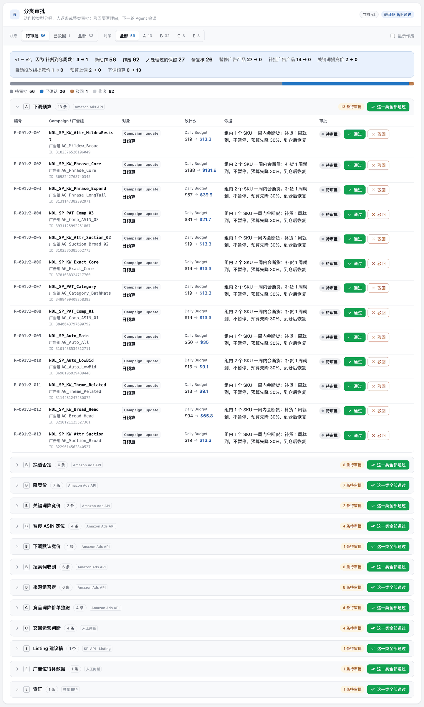
第二版的 ⑤：顶上一条蓝色对比条写明 v1 → v2 变了什么；第一组变成「下调预算」13 条，「暂停广告产品」这一组没有了。
7d. 工具栏状态切到「全部」，勾上右边「显示作废」，展开「暂停广告产品 · 上一版 v1」。
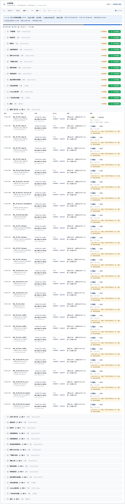
上一版里人处理过的：你通过的 26 条带「⚠ 输入已变，请复核」，你驳回的那条带理由；没人点过的旧动作划线作废。
应该看到货一周就到，不该停广告，所以「暂停广告产品」「补挂广告产品」整组没了，换成 13 条「下调预算」（每个含将断货 SKU 的活动预算先降 30%）；按表现出的「降竞价」「换道否定」「暂停 ASIN 定位」和到仓无关，照旧在。你通过过的那 26 条「暂停」现在规则不再建议，它不替你撤，只标「请复核：撤回还是照做」。
打开 ~/ads-lab/工作台.db（SQLite），只读，不许改：告诉我 action 表里第 1 版和第 2 版各多少条、各是什么状态；我通过和驳回的那几条现在是什么状态、note 字段写了什么。
应该看到它用 sqlite3 或 python 查库，报出的数和页面一致。结论：输出跟着输入变；模型可以忘，系统状态不能忘。
卡住了
页面没变化：看第 2 格。写「输入没变」＝你没点保存；写「没有待处理的任务」＝状态没回到待处理。
故意弄坏两次，看它会不会停约 3 分钟
8a. 什么都不改，点 ① 里的「原样再触发」，再点「跑一圈」。
应该看到第 2 格：「输入和上一轮一模一样，结果已在库里 → 同一份输入不重复跑」；第 6 格：「停。状态改回「待核对」」。⑥ 的运行历史没有多出一行。
8b. 把「补货到仓还要几周」清空，保存，「跑一圈」。
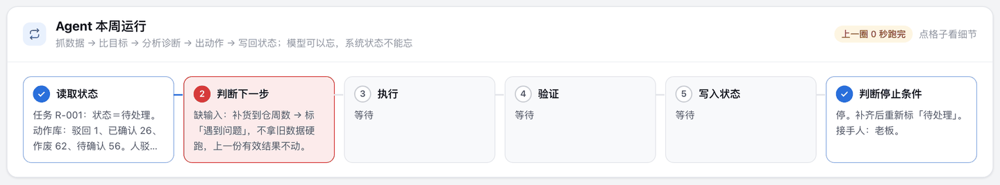
缺输入：第 2 格变红，第 3、4、5 格根本没跑。
应该看到第 2 格变红：「缺输入：补货到仓周数 → 标「遇到问题」，不拿旧数据硬跑，上一份有效结果不动」；顶栏状态「遇到问题」带红点；⑤ 里的动作一条没变。没有停止条件的自动化，不是员工，是事故。
8c. 把到仓周数填回 4，保存，「跑一圈」——会出 v3（输入又变了），「暂停」那一组回来了。
卡住了
8b 之后第 2 格一直红：正常，它在等人补输入；填回去再跑就恢复。
⑥ 执行·下周看结果，和「持续运行」约 5 分钟
⑥ 分四块：四个执行通道（Amazon Ads API、SP-API Listing、领星 ERP、人工判断，各自写着管什么、现在怎么做、待执行／已执行／已验证各几条；通道没接通时就「导出批量上传表」给人上传）、执行清单（审批通过的按通道分组，能标「已执行」「下周已验证」）、下周看结果（复盘日倒计时＋行动卡第 9 格）、行动卡九格、驳回记录、回测、运行历史、操作记录。
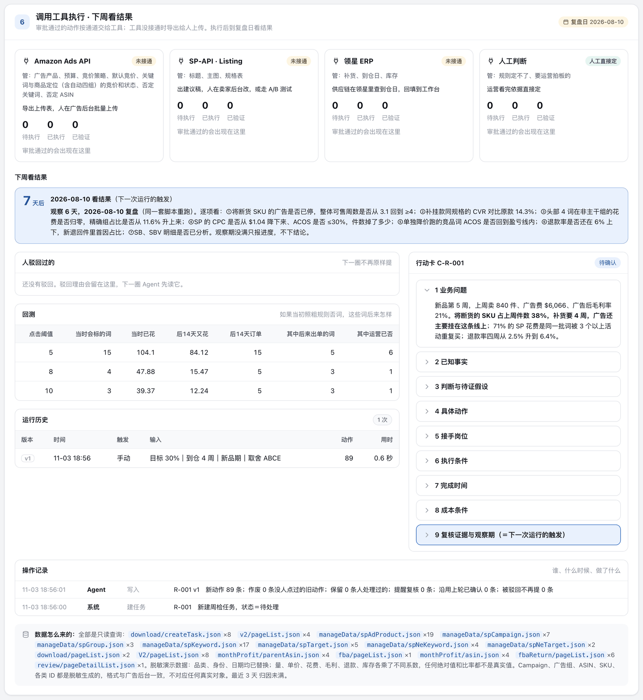
⑥ 执行·下周看结果：通道卡、执行清单、下周看结果、行动卡。
在 Amazon Ads API 那张通道卡点「导出批量上传表」，看下载的 CSV 表头；回到执行清单，把一条标「已执行」。再往上翻到「持续运行：每周一跑一圈」。
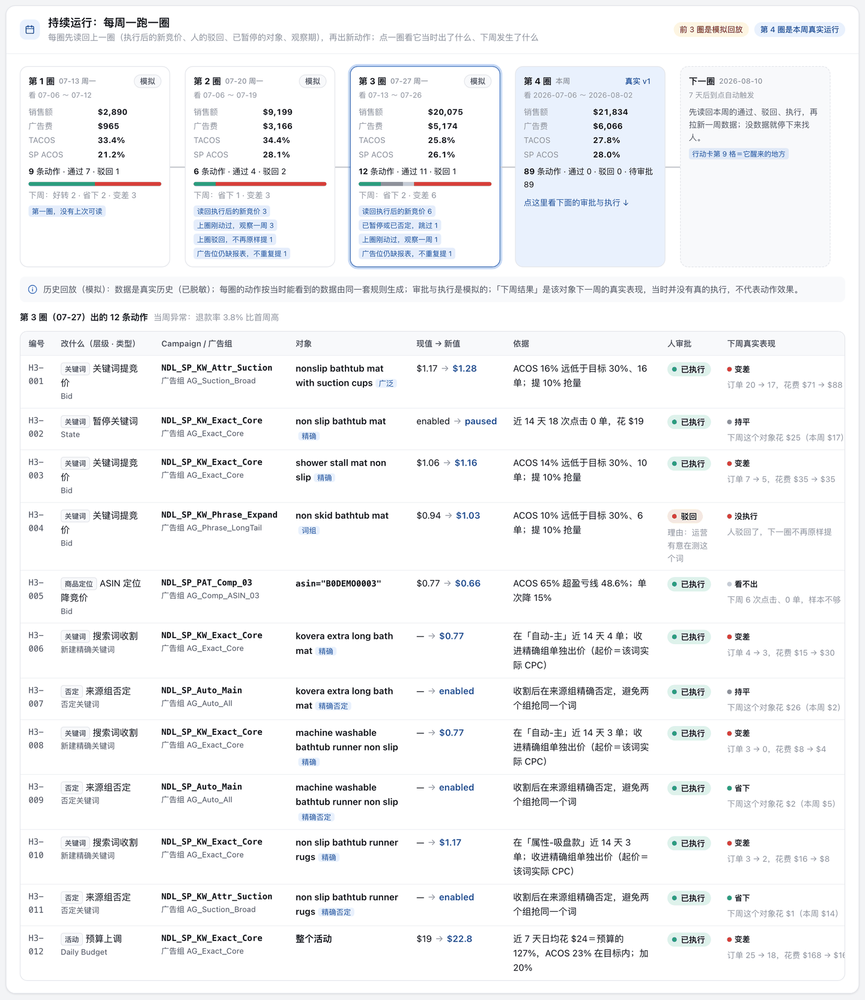
持续运行：前三圈是模拟回放，第四圈是你刚跑的真实一圈，最右是下一圈什么时候醒。点一圈看它当时出了什么、下周真实发生了什么。
应该看到批量上传表的列是广告后台认的：Product／Entity／Operation／Campaign ID／Ad Group ID／SKU／Keyword Text／Match Type／State／Bid／Daily Budget。持续运行那块每张卡都写着「读回上一圈」的内容（执行后的新竞价、上圈驳回不再提、刚动过的观察一周）；不少动作下周「变差」——那是真实数据的波动，页面也写明了「当时没有真的执行，不代表动作效果」。这就是为什么每周都要复盘，而不是看一次就下结论。
读 ~/ads-lab/广告闭环/行动卡/ 里最新一张卡的第 9 格，把它改写成一张到期检查清单：哪天、看哪几个数、各自过线标准是多少、没过线说明什么。再看 ⑥ 的操作记录，用三句话说清这一圈谁做了什么。
应该看到一张 6–7 项的清单，每项有数、有线；三句话里有「上传后台是人做的」。
- 你能对着 ① 说出三个输入分别是谁给的、为什么是这个数 —— 立项卡
- 运行历史里至少有 v1、v2 两圈，第二圈是改了输入后跑的 —— 两轮产出
- 第 8 步那次「遇到问题」在操作记录里，上一份结果没被覆盖 —— 一条异常处理
- 至少一条驳回，理由是你写的，而且它在下一圈没有再提 —— 老板判断
- 你能说出行动卡第 9 格里下次什么时候跑、看哪几个数 —— 下次怎么触发
第二轮 · 换成你自己的产品（约 90 分钟，带了报表的学员做）
把自己的报表放进来约 15 分钟
放到 ~/ads-lab/我的数据/，表头照 我的数据-示例/ 抄，细节看 数据格式.md。真实数据只留在你自己电脑上。没带数据的学员：继续用示例，从第 14 步起只做「对 Codex 说」的部分。
| 文件 | 从哪来 | |
|---|---|---|
| 搜索词报告.csv | 广告后台 → 报告 → 创建报告：商品推广／搜索词／按天／最近 30 天以上，下载 CSV。英文表头不用改 | 必需 |
| 周度经营.csv | 手填，每行一周：件数、销售额（业务报告）；SP／SB／SBV 广告费（广告后台）；退款件；广告前毛利率 | 必需 |
| 库存.csv | 手填，每行一个 SKU：可售、上周销量（FBA 库存页、业务报告） | 必需 |
| 产品.json、参数.json、分组规则.json | 第 11、12 步做 | 必需 |
| 活动.csv／关键词竞价.csv／否定词.csv／广告产品.csv／退货.csv | 广告后台批量操作导出、广告产品报告、退货报告；没有就少几类动作 | 可选 |
| 广告组.csv／商品定位.csv／否定ASIN.csv，以及 活动.csv 里的竞价策略、广告位加价列 | 广告后台 → 批量操作 → 下载批量表；没有就出不了「改竞价策略」「下调默认竞价」「ASIN／类目定位调价」「否定 ASIN」 | 可选 |
看一下 我的数据/ 里的文件：每个多少行、有哪些列；搜索词报告的时间从哪天到哪天、涉及几个广告活动。先别分析，也别改文件。
应该看到行数、列名、时间范围。先确认周期完整：至少 3 周，建议 4 周以上；最近 3 天归因没满，订单会偏少。
卡住了
近 4 周点击不到 300 次：换一个量大的产品。搜索词报告只有汇总没有按天：重新导一份「每日」的。
你亲手填：目标与约束约 10 分钟
必须人填。AI 看得到报表，看不到你为什么这么投。
一项一项问我，我答你记，写成 我的数据/参数.json 和 我的数据/产品.json（格式照 我的数据-示例/）：目标 ACOS 是多少；广告前毛利率（盈亏线）是多少；现在是新品期、成长期还是成熟期；补货到仓还要几周；哪个活动是精确、哪个是词组、哪个是广泛；品牌名；客单价。另外把我这个品的「不能动的」记一页纸：哪些词是防守词、哪些活动是有意为之。
应该看到两个 json 加一页纸，全是你的话。
卡住了
不知道盈亏线：售价减去采购、头程、佣金、FBA 费，再除以售价。分不清哪个活动是精确：看报表「匹配类型」一列，哪个活动全是精确匹配。
写你这个品类的分组规则约 20 分钟
每个品类做一次。示例的规则在 分组规则.json，五类词表都是正则，不许照抄——那是另一个品类的词。
照 ~/ads-lab/分组规则.json 的结构给我的品类做一份，存到 我的数据/分组规则.json。先把我搜索词报告里花费前 80 的搜索词读一遍，给我一份候选：哪些是核心大词、哪些是属性长尾、哪些是竞品品牌、哪些是跑偏（需求不同）、哪些是泛词（没有购买意图）。每一类列 10 个例子让我确认，我改完你再写正则。写完用前 80 个词试分一遍，把拿不准的 10 个列出来让我定。
应该看到它停下来让你定；试分后「拿不准的 10 个词」由你一条条判，判完它改规则再试。
卡住了
它想用示例的词表：叫停。它把没有购买意图的词也归进核心词：让它先解释 INTENT 这一类是干什么的，再改。
导入，起一个你自己的工作台约 10 分钟
用 python3 _脚本/import_my_data.py 我的数据 ~/ads-lab-mine 导入，把它打印的「列对应」「导入了多少」「窗口」原样念给我。然后用 python3 工作台/app.py --root ~/ads-lab-mine --port 8811 再起一个工作台，告诉我地址。示例那个 8810 不要关。
应该看到列对应表里八个必需列都对上了；周度经营几周、库存几个 SKU、可选表各多少条；窗口是报表最后 28 天。浏览器开 http://localhost:8811，看到的是你自己的店名和产品名，状态「待处理」。
卡住了
认不出列：按它打印出来的表头改列名（中文）再来。参数里的活动名不在报表里：照它列出的名字改，一个字都不能差。报「至少要 3 周」：回后台重导。
跑第一圈，先看大盘，再改规则约 10 分钟
在 8811 页面点「跑第一圈」。
读 ~/ads-lab-mine/广告闭环/输出/数字.json，把三件事念给我听：分组账（每组花费、占比、ACOS）；同一个词被几个活动同时买的花费占比；头部四个词各花在哪些活动。然后打开 分组明细-近14天-请人工纠错.csv，把花费前 30 的词和它的分组列给我看，我来挑分错的。
应该看到你逐条判分错的词，让它改 我的数据/分组规则.json，重新导入到同一个目录，在页面点「原样再触发」再「跑一圈」：第 2 格写「输入变了（规则版本…）→ 重跑」。分组对了，诊断树上的异常和分析才可信。
卡住了
诊断树「分析时还缺的数据」很长：正常，可选表没给的部分它都会写成缺。
摆选项，你来选约 5 分钟
基于 ~/ads-lab-mine 这一轮的事实和我的目标与约束，给 3–5 个可选动作。每个写清：什么时候该选、代价折成钱是多少、可逆吗。不要替我选。
你口头选，并说一句为什么。到诊断树的对策列，勾出你的取舍，点「按这个取舍重新生成」，再「跑一圈」。
应该看到第 2 格写「输入变了（取舍项…）」；⑤ 只剩你选的那几类动作。
当一回运营，按通道导出约 10 分钟
在 ⑤ 逐条通过或驳回；驳回写理由。做完到 ⑥，在 Amazon Ads API 那张通道卡点「导出批量上传表」；Listing 建议稿和到仓日查证各自导出清单。
打开我导出的批量上传表，按 Entity 分成三段念给我：Product Ad（SKU、State）、Keyword／Negative Keyword（Keyword Text、Match Type、Bid、State）、Campaign（Daily Budget）。核对每一行的 Campaign ID 和 Ad Group ID 都不为空；哪一行为空就标出来——那是我导入时缺了对应的表。
应该看到三段清单，ID 齐全。上传广告后台这一步，永远是人做：广告后台 → 批量操作 → 上传。传完回到 ⑥ 执行清单，把上传过的动作点「标为已执行」。
卡住了
清单里有一条你后来觉得不对：回 ⑤ 点「撤回」，它就不会进下一次导出。
到日子，人来复盘约 10 分钟
这一步没有 AI 替你判断。行动卡第 9 格写的那一天：
1. 从后台重新导一份包含最近一周的搜索词报告，覆盖 我的数据/搜索词报告.csv；周度经营.csv 加一行；库存.csv 更新可售和上周销量。 2. 重新导入到同一个目录，页面点「原样再触发」→「跑一圈」。 3. 在 ⑥ 执行清单里，把结果对得上的动作点「下周已验证」。
应该看到第 1 格读回了你「已执行」的动作；第 2 格写「输入变了（数据窗口：…）→ 重跑」；指标卡和 ① 换成新一周的数；「持续运行」时间线多出一圈。上一张卡第 9 格里的几个数，你逐项对：到仓日、补挂款的转化、精确组占比、CPC、竞品词 ACOS。
把 ~/ads-lab-mine/广告闭环/行动卡/ 里上一张卡的第 9 格，和这一圈 输出/数字.json 里对应的数逐项对照，列成表：指标、当时说要看的线、现在的值、过没过。过不了的，先问是动作没执行、执行了没效、还是外部变了，分开写。
应该看到一张对照表。跑过两圈、第 9 格逐项对过、有验证结论的，才算数字员工。
四条不许（Codex 犯了就叫停）
常见问题
| 现象 | 怎么办 |
|---|---|
| 页面打不开或空白 | 终端里那个进程是不是还在；不在就重新 python3 工作台/app.py。刷新一次。 |
| Address already in use | 端口被占，加 --port 8811。 |
| Operation not permitted | 仓库放在桌面或文稿下了，挪到 ~/ads-lab。 |
| 「跑一圈」按钮是灰的 | 上一圈还在跑；等一下。一直灰就刷新。 |
| 点通过没反应，提示没有权限 | 右上角「当前身份」不对：老板和广告运营能点动作，只有老板能改取舍和目标，供应链只能改到仓周数。 |
| 改了输入它没重跑 | 没点「保存，任务回到「待处理」」；或者第 2 格写了「输入没变」。 |
| 想回到刚开始的样子 | 右上角「重置」。它删的是状态库（谁点过什么），不删数据文件。 |
| 演示数据和自己的数据想同时看 | 演示在 8810，自己的在 8811，两个进程各开各的。 |
| Codex 每条命令都要我批准 | 正常，点同意；嫌烦可以选「本次会话都允许」。 |
术语
| 词 | 意思 |
|---|---|
| ACOS | 广告花费 ÷ 广告带来的销售额。只看广告这一笔。 |
| TACOS | 广告花费 ÷ 总销售额（含自然单）。看广告占整个生意的比重。 |
| 盈亏线 | 广告前毛利率。ACOS 超过它，这一单就是亏的。 |
| 归因未满 | 亚马逊按点击后 7 天算订单，最近几天的订单还没记全，所以偏少。 |
| 同词多活动 | 同一个搜索词被三个以上活动同时买，自己跟自己抢流量。 |
| 换道否定 | 不是不要这个词，是在跑偏的那个活动里把它否掉，让它回到主干活动去跑。 |
| 可售周数 | 可售库存 ÷ 上周销量。小于补货到仓周数，就是要断货。 |
| 头部词 | 近 14 天花费最高的四个搜索词。 |
| 诊断树 | 异常 → 分析 → 对策 → 动作的连线；一个异常可以引出多个分析，一个对策可以综合多个分析。 |
| 执行通道 | 动作最终交给谁执行：Amazon Ads API、SP-API Listing、领星 ERP、人工判断。没接通的通道，导出批量上传表由人上传。 |
| 批量上传表 | 广告后台「批量操作」认的 CSV：Entity／Operation／Campaign ID／Ad Group ID／Keyword Text／Match Type／State／Bid／Daily Budget。 |
| 请复核 | 人确认过、但新输入下规则不再建议的动作；系统不替你撤，只标出来。 |
| 待确认 / 已确认 / 已执行 / 已验证 / 驳回 / 作废 | 动作的六种状态。Agent 只会生成「待确认」；后面每一步都是人点的；「作废」是输入变了之后，没人点过的旧动作自动退场。 |
文件地图
| 路径 | 是什么 |
|---|---|
| 工作台/app.py、工作台/index.html | 后端和页面。标准库加 SQLite，不联网。 |
| 工作台.db | 状态库：任务、动作、行动卡、运行、操作记录。「重置」会删掉重建。 |
| _原始拉取/ | 报表和广告结构数据（演示版已脱敏并换了品类）。 |
| 参数.json、分组规则.json、显示映射.json | 三个输入和活动分工；你这个品类的五类词表；演示数据的脱敏名称和 ID（自己的数据没有这个文件，就显示原名）。 |
| 广告闭环/输出/ | 每一圈的产物：数字.json（所有事实和异常）、诊断-三栏表.md、选项.json、动作清单.csv／.json、验证器.json、分组明细-近14天-请人工纠错.csv、回测、各类调整表。 |
| 广告闭环/行动卡/ | 每一版的行动卡（九格）。 |
| 历史回放.json | 「持续运行」里前三圈的模拟回放，由 _脚本/history_sim.py 生成，页面只读。 |
| 运行报告-R-001.html、流程图/ | 单页报告（侧栏「运行报告」）；一圈 Loop 的流程图和项目架构图（侧栏「流程图」「架构图」）。 |
| 数据格式.md、我的数据-示例/、_脚本/import_my_data.py | 第二轮：自己的数据怎么准备、模板、导入脚本。 |
| _脚本/pipeline.py、_脚本/render.py | 算数、规则、验证器；三栏表、行动卡、报告。 |
| _脚本/tree.py、_脚本/fields.py | 诊断树的连线规则；动作翻成广告后台字段和批量上传表的列。 |
| _脚本/agent_run.py、装进Agent.md | 不开网页、命令行跑一圈并打印摘要；定时触发和推送怎么接。 |
| 学员材料/任务卡.md | 这一期要交什么、七步路线、L1／L2／L3 验收。 |
| _脚本/shoot.py、_脚本/make_handbook.py | 重截手册截图；重新生成这份手册。 |
包的地址：github.com/WaytoAIC/ads-workbench · 示例数据是脱敏并替换过品类的演示数据，没有一个数是真实值